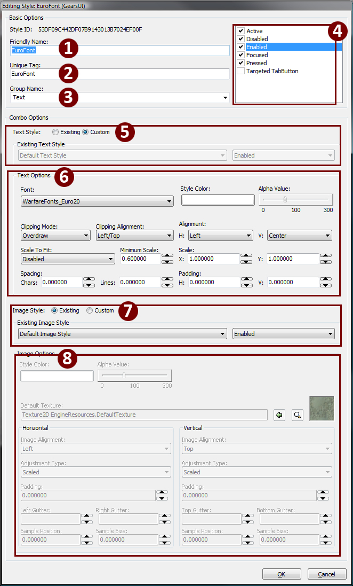

UDN
Search public documentation:
StyleEditorUserGuideKR
日本語訳
中国翻译
Interested in the Unreal Engine?
Visit the Unreal Technology site.
Looking for jobs and company info?
Check out the Epic games site.
Questions about support via UDN?
Contact the UDN Staff
中国翻译
Interested in the Unreal Engine?
Visit the Unreal Technology site.
Looking for jobs and company info?
Check out the Epic games site.
Questions about support via UDN?
Contact the UDN Staff
UI 스타일 편집기 사용자 가이드
문서 요약: UI Styles 작업에 UnrealUI? Style Editor 슈트를 사용하는 것에 대한 가이드 Maury Mountain 작성. Richard Nalezynski? 유지관리.개요
본 문서는 Unreal UI Style Editor의 주요 기능을 사용하는 방법에 대해 설명합니다. UI 장면에서 스타일을 사용하면 User Interfaces를 사용자 지정화할 시 많은 시간과 노력을 아낄 수 있고, UI의 비주얼 모습을 위한 집중된 한 영역을 갖게 하여줍니다. Styles 함수는 웹 개발에서의 CSS(Cascading Style Sheets)와 유사한 것으로 텍스트와 이미지가 UI 전반에 걸쳐 따르게 되는 사전 정의된 모습과 속성을 설정할 수 있게 하여줍니다. CSS와 유사하게 특정 스타일의 속성을 변경하면, 현재 지정된 모든 위젯에 걸쳐 업데이트 되어집니다.스타일 편집기 사용하기
스타일 제작하기
스타일 제작 시, 3가지 유형 중 한 유형의 스타일을 제작하여, Friendly Names와 Unique Tag를 부여하고, UI Editor내에서의 정리 및 간편한 지정을 위해 그룹 지정하고, 스타일이 어떤 UI 상태를 사용할 지를 설정하고, 속성을 구성하여, 최종적으로 Style Editor에서 스타일 결과를 미리보기할 수 있습니다.스타일 편집기 개요
편집기 레이아웃
다음은 Style Editor의 각기 다른 섹션들입니다. 작업하고 있는 스타일 유형에 따라 이러한 섹션들의 목적을 볼 수 있습니다.스타일 작업
스타일의 유형
텍스트 스타일 글꼴 유형만을 허용하는 스타일 유형입니다. 이 스타일은 현재 패키지에 있는 모든 글꼴을 찾아내어 스타일에 지정할 수 있도록 하여줍니다.
| 1-3 | 명명 섹션 | 일관성을 유지하기 위해 1과 2는 동일해야 합니다(하나는 코드에서 참조되고, 다른 하나는 UI 편집기에 의해 참조됨). 3은 Group 이름입니다. 이 이름은 마우스 오른쪽 버튼을 클릭 > assign style menuas UI editor(UI 편집기내에서 스타일 메뉴 지정)를 선택할 시 표시됩니다. |
| 4 | 위젯 상태 상자 | 체크상자를 선택하여 해당 스타일에 대해 각 상태를 "온" 시킵니다. 체크상자가 선택되지 않으면 위젯은 변경하지 않고, 변경하지 않거나 또는 부모 스타일 기본 설정을 사용하게 됩니다. 각 상태는 별도로 편집될 수 있거나 또는 SHIFT 키를 누른 상태에서 여러개를 선택하여 스타일내에서 그 값을 편집할 수 있습니다. |
| 5 | 텍스트 스타일 | Existing 또는 Custom을 선택할 수 있습니다. Existing은 콤보 스타일에 기초할 이전에 제작된 스타일 텍스트를 선택하는 것을 의미하고, Custom은 이 스타일에 구체적인 텍스트를 설정하는 것을 의미합니다. |
| 6 | 텍스트 옵션 | "Custom"인 선택된 경우에만 사용 가능합니다. 글꼴, 글꼴 색상, 알파, 클리핑 모드, 클리핑 정렬, 전체 정렬(수평 및 수직), 스케일 설정, 전체 X/Y 스케일, 문자간의 공백, 위젯의 왼쪽 및 위로부터의 패딩. |
| 7 | 미리보기 | 텍스트 옵션에 따른 텍스트 미리보기 상자. 텍스트 입력에 따라 변경합니다. |

| 1-3 | 명명 섹션 | 일관성을 유지하기 위해 1과 2는 동일해야 합니다( UniqueTag는 코드에서 참조되고, FriendlyName은 UI 편집기에 의해 참조됨). "FriendlyName"에는 공백을 사용할 수 있으나 UniqueTag에는 공백을 사용할 수 없음에 유의하십시오. 3은 Group 이름입니다. 이 이름은 마우스 오른쪽 버튼을 클릭 > assign style menuas UI editor(UI 편집기내에서 스타일 메뉴 지정)를 선택할 시 표시됩니다. |
| 4 | 위젯 상태 상자 | 체크상자를 선택하여 해당 스타일에 대해 각 상태를 "온" 시킵니다. 체크상자가 선택되지 않으면 위젯은 변경하지 않고, 변경하지 않거나 또는 부모 스타일 기본 설정을 사용하게 됩니다. 각 상태는 별도로 편집될 수 있거나 또는 SHIFT 키를 누른 상태에서 여러개를 선택하여 스타일내에서 그 값을 편집할 수 있습니다. |
| 5 | 이미지 컬러 설정 | 이미지로 곱할 컬러를 정의하거나 또는 전반적인 알파를 조절하는데 사용됨(DXT5 텍스처가 필요하지 않음). 검정색 텍스처는 색상 변경을 받아들이지 않습니다. |
| 6 | 텍스처 정의 | |
| 7 | 텍스처 설정 | Horizontal과 Vertical로 나뉘어져 있습니다. 텍스처가 스케일되고, 정렬(??? 사용해 본 적이 없음. Clipped 또는 clamped draw mode(고정된 그리기 모드)에서만 유용할 수 있음)되는 방법 및 위젯의 가장자리로부터의 패딩을 설정, 또는 Sample Position과 Sample Size(U, UL, V, VL)에 값을 입력하여 사용자 지정 UV를 가진 스타일을 제작할 수 있습니다. |
| 8 | 미리보기 | 이전 섹션에서 설정된 값을 표시하는 이미지의 미리보기. 이것은 텍스처 정의가 아니므로 텍스처를 스타일에 지정할 수 없다는 것에 유의하십시오. |

| 1-3 | 명명 섹션 | 일관성을 유지하기 위해 1과 2는 동일해야 합니다(하나는 코드에서 참조되고, 다른 하나는 UI 편집기에 의해 참조됨). 3은 Group 이름입니다. 이 이름은 마우스 오른쪽 버튼을 클릭 > assign style menuas UI editor(UI 편집기내에서 스타일 메뉴 지정)를 선택할 시 표시됩니다. |
| 4 | 위젯 상태 상자 | 체크상자를 선택하여 해당 스타일에 대해 각 상태를 "온" 시킵니다. 체크상자가 선택되지 않으면 위젯은 변경하지 않고, 변경하지 않거나 또는 부모 스타일 기본 설정을 사용하게 됩니다. 각 상태는 별도로 편집될 수 있거나 또는 SHIFT 키를 누른 상태에서 여러개를 선택하여 스타일내에서 그 값을 편집할 수 있습니다. |
| 5 | 텍스트 스타일 | Existing 또는 Custom을 선택할 수 있습니다. Existing은 콤보 스타일에 기초할 이전에 제작된 스타일 텍스트를 선택하는 것을 의미하고, Custom은 이 스타일에 구체적인 텍스트를 설정하는 것을 의미합니다. |
| 6 | 텍스트 옵션 | "Custom"인 선택된 경우에만 사용 가능합니다. 글꼴, 글꼴 색상, 알파, 클리핑 모드, 클리핑 정렬, 전체 정렬(수평 및 수직), 스케일 설정, 전체 X/Y 스케일, 문자간의 공백, 위젯의 왼쪽 및 위로부터의 패딩. |
| 7 | 이미지 스타일 | 콤보 스타일이 기초할 사전 제작한 이미지 스타일을 선택하거나 또는 Combo Style에 대한 구체적인 사용자 지정 설정을 제작합니다. |
| 8 | 텍스처 설정 | Horizontal과 Vertical로 나뉘어져 있습니다. 텍스처가 스케일되고, 정렬되는 방법 및 위젯의 가장자리로부터의 패딩을 설정, 또는 Sample Position과 Sample Size(U, UL, V, VL)에 값을 입력하여 사용자 지정 UV를 가진 스타일을 제작할 수 있습니다. |